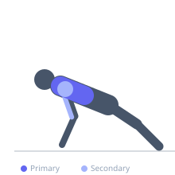

Exercise guide / Clap / Plyometric Push-Up
Clap / Plyometric Push-Up
The clap push-up is a plyometric variation in which the pressing phase is explosive enough to launch the hands off the floor, allowing a clap before landing. This develops upper-body power, rate-of-force development, and reactive strength in the chest, triceps, and anterior deltoids through a true stretch-shortening cycle.
Primary muscles
pectoralis major sternal
pectoralis major clavicular
Secondary muscles
deltoid anterior
triceps lateral head
Stabilizers
transverse abdominis
Equipment
No Equipment (Bodyweight)


Starting position
- Begin in a standard push-up position with hands shoulder-width apart and body in a straight line.
Setup
- Perform on a firm, flat surface that provides enough friction for a safe hand landing. Ensure there is adequate floor space.
Steps
- Step 1: Lower into the bottom of a push-up under control.
- Step 2: At the bottom, explosively press the floor away with maximum force.
- Step 3: Drive the torso upward fast enough for the hands to leave the floor.
- Step 4: Clap the hands together while airborne.
- Step 5: Land with hands in the original position, absorbing impact by bending the elbows immediately into the next rep.
Coaching cues
- Push the floor through the Earth
- Land soft — absorb with the elbows
- Quality over quantity — explosive intent every rep
Breathing
- Inhale on the way down. Exhale explosively on the press.
Range of motion
- Full depth on the descent. The press must be explosive enough to generate meaningful air time.
Tempo
- 2-0-X-0
Common mistakes
- Not lowering enough before the explosive press, reducing power output
- Landing stiff-wristed, risking wrist injury
- Attempting this exercise without sufficient standard push-up strength
Safety
- Master push-ups with a minimum of 20 consecutive reps before attempting plyometric variation
- Land with bent elbows to absorb impact
- Perform on a padded or non-slip surface
- Do not perform to failure — stop well before form breaks
Training
- power: 3–8 reps
- power: 3–5 sets
- Rest: {'power': 180}